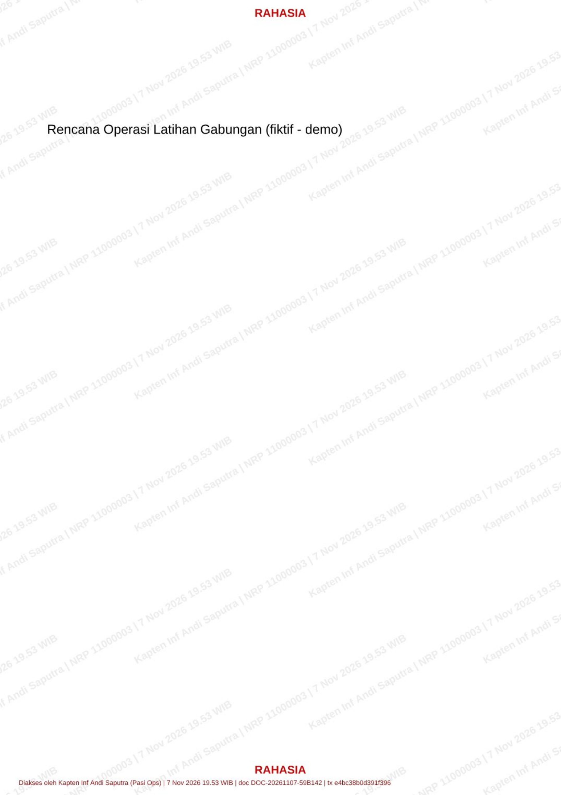
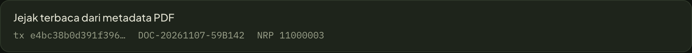

<!doctype html>
<html lang="id"><head><meta charset="utf-8"><title>06 Telusuri</title>
<link rel="stylesheet" href="../film/fonts.css"><link rel="stylesheet" href="../film/film.css">
<script src="../film/lib.js"></script>
<style>
  .head { left: 120px; top: 96px; font-size: 104px; white-space: nowrap; z-index: 3; }
  .head .n { color: var(--khaki); margin-right: 26px; }
  .page { position: absolute; left: 0; top: 0; width: 1819px; height: 2573px; transform-origin: 0 0; box-shadow: 0 60px 140px rgba(0,0,0,.6); background: #fff; }
  .page img { position: absolute; left: 0; top: 0; width: 1819px; }
  .leakTag { position: absolute; font: 600 28px/1 var(--mono); letter-spacing: .08em; color: #e8605a; padding: 10px 14px; border: 2px solid #e8605a; border-radius: 8px; background: rgba(10,16,11,.88); white-space: nowrap; }
  .ul { position: absolute; background: var(--gold-hi); transform-origin: 0 50%; }
  .ull { position: absolute; font: 500 28px/1 var(--mono); color: var(--gold-hi); white-space: nowrap; padding: 8px 12px; border-radius: 8px; background: rgba(10,16,11,.9); }
  .bigtx { position: absolute; font: 500 76px/1 var(--mono); color: var(--gold-hi); letter-spacing: .02em; white-space: nowrap; }
  .cursor { position: absolute; width: 34px; height: 44px; z-index: 4; }
  .inset { position: absolute; border-radius: 14px; overflow: hidden; box-shadow: 0 30px 80px rgba(0,0,0,.6), 0 0 0 1px var(--hair2); }
  .inset img { display: block; width: 100%; }
  .mini { position: absolute; width: 96px; height: 136px; border-radius: 4px; overflow: hidden; box-shadow: 0 16px 30px rgba(0,0,0,.5); }
  .mini img { width: 100%; display: block; }
  .cap { position: absolute; font: 500 28px/1 var(--mono); color: var(--dim); white-space: nowrap; letter-spacing: .04em; }
</style></head><body><script>
F.boot(6, (st, F) => {
  const { el, svg, words, reveal, show, draw, stamp, prog, E, lerp, blink, S, FR, clamp, css } = F;
  const SC = F.scene, D = SC.duration, ph = (id) => SC.sentences.find((s) => s.id === id).phr;
  const P16 = ph('S16'), P17 = ph('S17'), P18 = ph('S18');
  const R = F.rects;
  const head = el('div', 'abs title head', st, '<span class="n">03</span><span class="w"></span>');
  const headW = words(head.querySelector('.w'), 'Telusuri'), headN = head.querySelector('.n');

  // ---------- 6a: halaman PDF ber-watermark (keluaran WatermarkService, kelas RAHASIA) ----------
  const pclip = el('div', 'abs', st); css(pclip, { left: '0', top: '184px', width: '1920px', height: '746px', overflow: 'hidden' });
  const page = el('div', 'page', pclip);
  el('img', '', page).src = '../assets/ui/leak-1.png';
  const band = el('div', '', page); css(band, { position: 'absolute', left: 375 + 'px', top: 664 + 'px', width: '1000px', height: '62px', border: '10px solid var(--gold-hi)', borderRadius: '18px', transform: 'rotate(-20.6deg)', transformOrigin: '50% 50%' });
  const tok = [[190, 417, 'nama'], [541, 757, 'waktu'], [1062, 1267, 'kode transaksi']];
  const uls = tok.map(([a, b, l]) => { const u = el('div', 'ul', page); css(u, { left: a + 'px', top: '2551px', width: b - a + 'px', height: '4px' }); return u; });
  const leakTag = el('div', 'leakTag', st, 'SALINAN BOCOR');
  const ulLab = tok.map(([a, b, l]) => el('div', 'ull', st, l));
  const nrpLab = el('div', 'ull', st, 'NRP 11000003 · di watermark diagonal');
  const bigtx = el('div', 'bigtx', st, 'e4bc38b0d391f396');
  const pv = (v) => ({ ...v });
  const PV0 = { cx: 909, cy: 1286, s: 0.282, sx: 1060, sy: 556 }, PV1 = { cx: 909, cy: 1286, s: 0.29, sx: 1060, sy: 556 }, PV2 = { cx: 675, cy: 2470, s: 1.22, sx: 960, sy: 560 };
  const mixP = (a, b, k) => ({ cx: lerp(a.cx, b.cx, k), cy: lerp(a.cy, b.cy, k), s: lerp(a.s, b.s, k), sx: lerp(a.sx, b.sx, k), sy: lerp(a.sy, b.sy, k) });
  const pScr = (v, x, y) => ({ x: v.sx + (x - v.cx) * v.s, y: v.sy + (y - v.cy) * v.s });

  // ---------- 6b/6c: halaman Telusuri sungguhan ----------
  const W = { x: 120, y: 210, w: 1680, h: 690 };
  const win = el('div', 'shot', st); css(win, { left: W.x + 'px', top: W.y + 'px', width: W.w + 'px', height: W.h + 'px' });
  const imE = el('img', '', win); imE.src = '../assets/ui/trace_empty.png';
  const typ = el('div', '', win); css(typ, { position: 'absolute', overflow: 'hidden' });
  const typImgs = []; for (let i = 0; i <= 16; i++) { const im = el('img', '', typ); im.src = `../assets/ui/type_${String(i).padStart(2, '0')}.png`; typImgs.push(im); }
  const imR = el('img', '', win); imR.src = '../assets/ui/trace_result.png';
  const imF = el('img', '', win); imF.src = '../assets/ui/trace_full.png';
  const cur = svg('svg', { viewBox: '0 0 34 44', class: 'cursor' }, st);
  svg('path', { d: 'M2 2 L2 36 L11 28 L17 42 L23 39 L17 26 L30 26 Z', fill: '#ecebe0', stroke: '#0d170f', 'stroke-width': 2.5, 'stroke-linejoin': 'round' }, cur);
  const sim = el('div', '', st, 'DATA SIMULASI'); sim.id = 'simlabel';
  const ring = el('div', 'ring', st);
  const mini = el('div', 'mini', st, '');
  const inset = el('div', 'inset', st, '');
  const insCap = el('div', 'cap', st, 'atau unggah PDF-nya: jejak dibaca dari metadata');

  const cam = (img, v, fullW = 1920) => css(img, { width: fullW * v.s + 'px', left: W.w / 2 - v.cx * v.s + 'px', top: W.h / 2 - v.cy * v.s + 'px' });
  const mix = (a, b, k) => ({ cx: lerp(a.cx, b.cx, k), cy: lerp(a.cy, b.cy, k), s: lerp(a.s, b.s, k) });
  const toS = (v, x, y) => ({ x: W.x + W.w / 2 + (x - v.cx) * v.s, y: W.y + W.h / 2 + (y - v.cy) * v.s });
  const T0 = { cx: 700, cy: 470, s: 1.5 }, T1 = { cx: 1180, cy: 432, s: 1.5 }, T2 = { cx: 1200, cy: 1440, s: 1.5 }, T3 = { cx: 1200, cy: 1560, s: 1.5 };

  // waktu
  const tUI = P17[0], tType = P17[1] + 0.05, tTypeEnd = tType + 1.25, tPdfTab = P17[2], tClick = P17[2] + 1.6, tRes = tClick + 0.35;
  const tCard = tRes + 0.6, tChain = P18[3], tInset = 40.5;
  F.cue('stamp', 1.9); F.cue('tick', tClick); F.cue('tick', tRes + 0.1); F.cue('lock', tInset + 0.75);
  for (let i = 0; i < 16; i++) F.cue('key', tType + (i * (tTypeEnd - tType)) / 16);

  const ringTo = (rr, k) => {
    if (!rr || k <= 0) { ring.style.opacity = 0; return; }
    const g = 1 + (1 - Math.min(1, k)) * 0.2;
    css(ring, { left: rr.x - ((g - 1) * rr.w) / 2 + 'px', top: rr.y - ((g - 1) * rr.h) / 2 + 'px', width: rr.w * g + 'px', height: rr.h * g + 'px', opacity: clamp(k * 2) });
  };
  const rectS = (v, x0, y0, x1, y1, pad = 8) => { const a = toS(v, x0, y0), b = toS(v, x1, y1); return { x: a.x - pad, y: a.y - pad, w: b.x - a.x + pad * 2, h: b.y - a.y + pad * 2 }; };
  const lerpR = (a, b, k) => ({ x: lerp(a.x, b.x, k), y: lerp(a.y, b.y, k), w: lerp(a.w, b.w, k), h: lerp(a.h, b.h, k) });

  return (t) => {
    show(headN, t, P16[0] - 0.05, { dur: 0.4, dy: 14 }); reveal(headW, t, P16[0] + 0.1, { dy: 30, dur: 0.5 });
    show(sim, t, 0.6, { dur: 0.4 });

    // ===== 6a =====
    const zk = E.ioc(prog(t, P16[3] - 0.5, 1.4));
    let v = mixP(PV0, PV1, E.lin(prog(t, 0.6, P16[3] - 1.1)));
    v = mixP(v, PV2, zk);
    const arrive = E.spring(prog(t, 0.25, 1.0));
    const pageOut = E.ioc(prog(t, tUI - 0.2, 0.8));
    page.style.transform = `translate(${v.sx - v.cx * v.s - pageOut * 300}px, ${v.sy - 184 - v.cy * v.s + (1 - arrive) * 700}px) scale(${v.s})`;
    page.style.opacity = (t > 0.25 ? 1 : 0) * (1 - pageOut) * (1 - 0.85 * prog(t, 14.6, 0.6));
    page.style.visibility = t > tUI + 0.7 ? 'hidden' : 'visible';
    // label "salinan bocor" pada sudut kanan atas halaman
    const tl = pScr(v, 1819, 0);
    css(leakTag, { left: tl.x - 150 + 'px', top: tl.y - 24 + 'px' });
    stamp(leakTag, t, 1.9, 0); leakTag.style.opacity = t < 1.9 ? 0 : clamp(prog(t, 1.9, 0.1)) * (1 - prog(t, P16[3] - 0.6, 0.4));
    // pita watermark diagonal
    band.style.opacity = clamp(prog(t, P16[2] + 0.4, 0.3)) * (1 - prog(t, P16[3] - 0.6, 0.4));
    band.style.transform = `rotate(-20.6deg) scale(${lerp(1.08, 1, E.oc(prog(t, P16[2] + 0.4, 0.4)))})`;
    // garis bawah token footer
    const tU = [P16[3], P16[5], P16[6]];
    uls.forEach((u, i) => { u.style.transform = `scaleX(${E.oc(prog(t, tU[i], 0.35))})`; u.style.opacity = 1 - prog(t, 14.6, 0.5); u.style.height = 4 / v.s + 'px'; });
    tok.forEach(([a, b], i) => { const p = pScr(v, a, 2580); css(ulLab[i], { left: p.x + 'px', top: p.y + 'px' }); show(ulLab[i], t, tU[i] + 0.15, { dur: 0.35, dy: 10, out: 14.6 }); });
    const np = pScr(v, 190, 2420); css(nrpLab, { left: np.x + 'px', top: np.y + 'px' }); show(nrpLab, t, P16[4], { dur: 0.35, dy: 10, out: P16[5] });
    // cincin: dari chip bukti adegan 5 -> lepas; lalu pada txId footer
    let rr = null, rk = 0;
    if (t < 0.7) { rr = { x: 276.5, y: 584.5, w: 215.2, h: 66.9 }; rk = 1 - prog(t, 0.2, 0.5); }
    else if (t >= P16[6] && t < tUI) {
      const a = pScr(v, 1050, 2510), b = pScr(v, 1280, 2560);
      rr = { x: a.x, y: a.y, w: b.x - a.x, h: b.y - a.y }; rk = E.spring(prog(t, P16[6] + 0.2, 0.45)) * (1 - prog(t, 14.4, 0.3));
    }
    // txId terangkat menjadi teks besar, lalu terbang ke kolom input
    const lift = E.ioc(prog(t, 14.6, 0.8));
    const fly = E.ioc(prog(t, tUI, 0.9));
    const inp = toS(T0, 338, 432);
    const bx = lerp(lerp(1050 * v.s + v.sx - v.cx * v.s + 60, 590, lift), inp.x, fly);
    const by = lerp(lerp(500, 300, lift), inp.y - 20, fly);
    const bs = lerp(1, 0.37, fly);
    css(bigtx, { left: bx + 'px', top: by + 'px', transform: `scale(${bs})`, transformOrigin: '0 0', opacity: (t > 14.6 ? clamp(lift * 2) : 0) * (1 - prog(t, tType - 0.1, 0.15)) });

    // ===== 6b =====
    const wk = E.ioc(prog(t, tUI + 0.1, 0.8));
    win.style.opacity = clamp(prog(t, tUI + 0.1, 0.4)) * (1 - 0.6 * E.ioc(prog(t, tInset, 0.5)));
    win.style.transform = `translateY(${(1 - wk) * 50}px)`;
    let u = T0;
    u = mix(u, T1, E.ioc(prog(t, tCard, 1.1)));
    u = mix(u, T2, E.ioc(prog(t, tChain, 1.6)));
    u = mix(u, T3, E.lin(prog(t, tChain + 1.6, tInset - tChain - 1.6)));
    cam(imE, u); cam(imR, u); cam(imF, u);
    // kotak pengetikan (potongan DPR 2 di koordinat CSS 316..694 x 402..462)
    css(typ, { left: W.w / 2 + (316 - u.cx) * u.s + 'px', top: W.h / 2 + (402 - u.cy) * u.s + 'px', width: 378 * u.s + 'px', height: 60 * u.s + 'px' });
    const n = Math.max(0, Math.min(16, Math.floor(((t - tType) / (tTypeEnd - tType)) * 16) + (t >= tType ? 1 : 0)));
    typImgs.forEach((im, i) => { im.style.width = '100%'; im.style.position = 'absolute'; im.style.left = im.style.top = 0; im.style.opacity = i === n ? 1 : 0; });
    typ.style.opacity = t < tRes ? 1 : 0;
    imR.style.opacity = t >= tRes ? 1 : 0;
    imR.style.clipPath = `inset(0 0 ${(1 - E.ioc(prog(t, tRes, 0.5))) * 100}% 0)`;
    imF.style.opacity = t >= tChain ? 1 : 0;
    // kursor menuju tombol Telusuri
    const btn = toS(T0, 504, 531), from = toS(T0, 760, 700);
    const ck = E.ioc(prog(t, tClick - 0.6, 0.55));
    const press = t > tClick && t < tClick + 0.18 ? 0.88 : 1;
    css(cur, { left: lerp(from.x, btn.x, ck) + 'px', top: lerp(from.y, btn.y, ck) + 'px', opacity: t > tClick - 0.65 && t < tRes + 0.6 ? clamp(prog(t, tClick - 0.65, 0.15)) * (1 - prog(t, tRes + 0.3, 0.3)) : 0, transform: `scale(${press})`, transformOrigin: '0 0' });
    // cincin pada UI
    if (t >= tPdfTab && t < tClick - 0.5) { rr = rectS(T0, 565, 326, 680, 361, 6); rk = E.spring(prog(t, tPdfTab, 0.4)) * (1 - prog(t, tClick - 0.8, 0.25)); }
    if (t >= P18[0] && t < tChain) {
      const A = rectS(u, 750, 248, 1610, 340), B = rectS(u, 1180, 392, 1505, 468), C = rectS(u, 745, 602, 1605, 652);
      let r = A;
      r = lerpR(r, B, E.ioc(prog(t, P18[1], 0.45)));
      r = lerpR(r, C, E.ioc(prog(t, P18[2] + 0.2, 0.45)));
      rr = r; rk = E.spring(prog(t, P18[0] + 0.3, 0.45)) * (1 - prog(t, tChain - 0.25, 0.25));
    }
    if (t >= tChain + 1.4 && t < tInset) { rr = rectS(u, 808, 1369, 1595, 1506, 6); rk = E.spring(prog(t, tChain + 1.5, 0.45)) * (1 - prog(t, tInset - 0.2, 0.2)); }
    // ===== 6c: sisipan unggah PDF =====
    const IN = { x: 552, y: 720, w: 1154, h: 90 };
    const dk = E.oc(prog(t, tInset, 0.55));
    css(mini, { left: '1160px', top: lerp(80, 560, dk) + 'px', opacity: t > tInset ? 1 - prog(t, tInset + 0.7, 0.25) : 0, transform: `rotate(${lerp(-8, 0, dk)}deg)` });
    const ik = E.spring(prog(t, tInset + 0.75, 0.5));
    css(inset, { left: IN.x + 'px', top: IN.y + 'px', width: IN.w + 'px', opacity: clamp(prog(t, tInset + 0.75, 0.15)), transform: `scale(${lerp(0.9, 1, ik)})` });
    css(insCap, { left: IN.x + 'px', top: IN.y - 52 + 'px' }); show(insCap, t, tInset + 0.9, { dur: 0.4, dy: 10 });
    if (t >= tInset + 1.2) { rr = { x: IN.x - 8, y: IN.y - 8, w: IN.w + 16, h: IN.h + 16 }; rk = E.spring(prog(t, tInset + 1.2, 0.45)); }
    ring.style.zIndex = 6; ringTo(rr, rk);
  };
});
</script></body></html>
